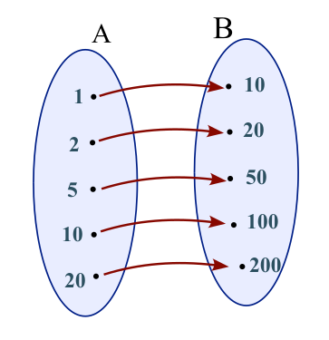
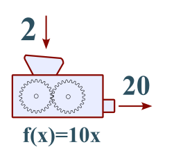

7. Συναρτήσεις
Θεωρία
- Σύνολο είναι μία συλλογή από όμοια αντικείμενα που είναι καλά ορισμένα και διαφορετικά μεταξύ τους. Έχουμε μάθει μερικά σύνολα, π.χ. `ZZ = { 0, +-1, +-2, +-3, ...}` αλλά μπορείτε και να κατασκευάσετε και τα δικά σας σύνολα π.χ. `Α={ 1, 2, 3, 4, 5 }` ή `Β= {2, 4, 6, 8, 10}` και ότι άλλες συλλογές από αριθμούς ή άλλα μαθηματικά αντικείμενα μπορείτε να φανταστείτε.
- Κάθε σύνολο μπορεί να έχει και μία φυσική ερμηνεία, π.χ. τα στοιχεία του συνόλου `Α= { 1, 2, 5, 10, 20 }` μπορεί να αναπαριστούν την χωρητικότητα σε λίτρα των δοχείων που έχει προς πώληση ένας παραγωγός ελαιολάδου. Δηλαδή στην συγκεκριμένη περίπτωση αυτός ο παραγωγός πουλάει δοχεία με λάδι χωρητικότητας 1, 2, 5, 10 ή 20 λίτρων.
- Ενώ τα στοιχεία του συνόλου `Β={ 10, 20, 50, 100, 200}` μπορεί να είναι οι τελικές τιμές των παραπάνω δοχείων. Δηλαδή το δοχείο του 1 λίτρου πωλείται προς 10€ κτλ.
- Μεταξύ δύο συνόλων μπορεί να υπάρχει μια σχέση (ή αντιστοιχία) π.χ. για τα δύο προηγούμενα σύνολα υπάρχει η παρακάτω αντιστοιχία:
- Δηλαδή το δοχείο του 1 λίτρου πωλείται προς 10€, των 2 λίτρων προς 20€ κτλ.
| `x in Α` (σε Λίτρα) |
1 |
2 |
5 |
10 |
20 |
| `y in Β` (σε €) |
10 |
20 |
50 |
100 |
200 |
- Τα σύνολα μας αρέσει να τα σχεδιάζουμε σας “κύκλους” που μέσα τους αναγράφουμε τα στοιχεία τους και με τα βελάκια αναπαριστούμε την σχέση μεταξύ των στοιχείων τους.

- Η σχέση μεταξύ των των στοιχείων δύο συνόλων ονομάζεται συνάρτηση. Την σχέση αυτή μπορούμε να την δείξουμε με αρκετούς τρόπους
- Με τους κύκλους και τα βελάκια του παραπάνω σχήματος
- Με τον παραπάνω πίνακα που ονομάζεται πίνακας τιμών
- Με τον τύπο της συνάρτησης
- Με την γραφική παράσταση που θα δούμε πιο κάτω.
- Το πρώτο σύνολο από το οποίο ξεκινάνε τα βελάκια ονομάζεται πεδίο ορισμού, ενώ το δεύτερο σύνολο που καταλήγουν τα βελάκια ονομάζεται σύνολο τιμών.
- Τα στοιχεία του δεύτερου συνόλου ονομάζονται “τιμές” και η λέξη αυτή για τα μαθηματικά είναι πολύ ιδιαίτερη και θα εννοεί πάντα τα στοιχεία του δεύτερου συνόλου.
- Τα στοιχεία του πρώτου συνόλου από όπου ξεκινάνε τα βελάκια ονομάζονται τετμημένες ενώ του δεύτερου τεταγμένες.
- Την παραπάνω σχέση: των λίτρων του ελαιολάδου και της τιμής των, μπορούμε να την ονομάσουμε με το γράμμα f ή με τα γράμματα g, h, κτλ. Γράφουμε
- `f: A -> B` με τύπο `f(x)=10 cdot x`
- Μία συνάρτηση μπορούμε να την παρομοιάσουμε με μία μηχανή που έχει μία είσοδο και μία έξοδο. Βάζουμε στην είσοδο κάποιον αριθμό, η μηχανή κάνει πράξεις με αυτόν τον αριθμό και επιστρέφει το αποτέλεσμα αυτών των πράξεων στην έξοδο της μηχανής, π.χ. στο παράδειγμά μας αν βάλουμε στην είσοδο της μηχανής `f(x)=10x` τον αριθμό `x =1` θα γίνουν οι πράξεις `10 cdot 1` και θα προκύψει στην έξοδο το αποτέλεσμα 10. Γράφουμε `f(1)=10`. Ακόμα `f(2)=20`, `f(5)=50` κτλ

- Η μεταβλητή x ονομάζεται ανεξάρτητη μεταβλητή ενώ το αποτέλεσμα f(x) ή y ονομάζεται εξαρτημένη μεταβλητή.
- Σε όλες τις περιπτώσεις μια συνάρτηση με τύπο π.χ. `f(x)= 10x` μπορούμε αντί για `f(x)` να γράφουμε y, δηλαδή `y = 10 x`
- Είναι πολύ σημαντικό όταν δίνεται ο τύπος μιας συνάρτησης να έχουμε ορίσει σωστά το σύνολο Α, δηλαδή το πεδίο ορισμού, ώστε για όλους τους αριθμούς που θα εισάγουμε στην συνάρτηση να γίνουν οι πράξεις χωρίς προβλήματα, π.χ. στην συνάρτηση `g(t)= 1 / t`, δεν μπορούμε να υπολογίσουμε το `g(0)` αφού δεν ορίζεται η διαίρεση με το μηδέν. Μπορείτε να φανταστείτε ότι ρίξατε μέσα στην μηχανή μία πέτρα (εδώ η πέτρα είναι το 0) και χάλασε ο μηχανισμός της! Επίσης φανταστείτε την συνάρτηση `h(x)=sqrt x`. Εδώ δεν θα ήταν σωστό να υπολογίσουμε το `h(-1)=sqrt{: -1 :}`. To ` -1` θα κατέστρεφε όσα ξέρετε για τον υπολογισμό των ριζών. Βέβαια ο Ιταλός μαθηματικός Τζερόλαμο Καρντάνο (1501-1576) βρήκε λύση για τον υπολογισμό αυτής της ρίζας. Επομένως προσέχουμε,
- Να μην διαιρούμε με το μηδέν και
- να μην υπολογίζουμε τετραγωνικές ρίζες αρνητικών αριθμών.
- Η δραστηριότητα 1 του σχολικού βιβλίου στην σελίδα 58 είναι πολύ σημαντική ώστε να καταλάβετε ότι μια πραγματική πόλη με δρόμους και κτίρια μπορούμε να την αναπαραστήσουμε σε μικρογραφία σε ένα χαρτί με την βοήθεια ενός συστήματος συντεταγμένων.
- Ένα καρτεσιανό σύστημα συντεταγμένων αποτελείται από δύο κάθετους μεταξύ τους άξονες. Κάθε άξονας έχει πάνω του αριθμούς σε ίσες αποστάσεις που είναι η κλίμακα του. Κάθε άξονας περιέχει και από ένα βέλος που συνήθως δείχνει προς τα δεξιά, η κατεύθυνση αυτή μας δείχνει την πλευρά που αυξάνονται οι αριθμοί της κλίμακας, π.χ. το 2 βρίσκεται δεξιότερα του 1 αφού 2>1 κτλ. Το σημείο που τέμνονται οι δύο άξονες ονομάζεται αρχή (δεν είναι οι αρχή των αξόνων γιατί οι άξονες είναι ευθείες χωρίς αρχή τέλος αλλά στο σημείο αυτό βρίσκεται το μηδέν σε κάθε άξονα. Σε κάθε άξονα οι αποστάσεις μεταξύ των αριθμών πρέπει να είναι ίσες. Δηλαδή οι αριθμοί στον οριζόντιο άξονα πρέπει να βρίσκονται σε ίσες αποστάσεις, επίσης οι αριθμοί στον κατακόρυφο άξονα πρέπει να βρίσκονται σε ίσες αποστάσεις, αλλά δεν είναι αναγκαίο οι αποστάσεις στον οριζόντιο και στον κατακόρυφο άξονα να είναι ίσες, αν είναι τότε το σύστημα λέγετε κανονικό. Το καρτεσιανό σύστημα συντεταγμένων λέγεται και ορθογώνιο σύστημα συντεταγμένων και αν επιπλέον είναι και κανονικό τότε ονομάζεται και ορθοκανονικό σύστημα συντεταγμένων. Επομένως,
- Έχουμε μία πραγματική πόλη
- και ένα σύστημα συντεταγμένων ζωγραφισμένο στο χαρτί όπου αναπαριστά την πραγματική πόλη.
- Στην σελίδα που ακολουθεί έχουμε ένα λευκό ορθοκανονικό σύστημα συντεταγμένων που μπορείτε να φωτοτυπήσετε και να το χρησιμοποιείται. Αλλιώς αγοράστε από το βιβλιοπωλείο ένα μιλιμετρέ χαρτί.
- Για να σχεδιάσουμε μια γραφική παράσταση ακολουθούμε την παρακάτω διαδικασία. Σαν παράδειγμα θα δούμε πως σχεδιάζουμε την γραφική παράσταση του παραδείγματος του ελαιοπαραγωγού.
- Κατασκευάζουμε το σύστημα συντεταγμένων, με τους άξονες την κλίμακα,την κατεύθυνση και τις μονάδες. Οι μονάδες για το παραπάνω παράδειγμα είναι για τον οριζόντιο άξονα τα Λίτρα και για τον κατακόρυφο τα €.
- Από τον τύπο της συνάρτηση `f(x)=10 cdot x` και το πεδίο ορισμού `Α= { 1, 2, 5, 10, 20 }` βρίσκουμε το πεδίο τιμών κάνοντας τις πράξεις: `f(1)=1 cdot 10 =10`, `f(2)=2 cdot 10=20`, `f(5)= 5 cdot 10=50` κτλ. Τα αποτελέσματα τα βάζουμε στον πίνακα τιμών.
| `x in Α` (σε Λίτρα) |
1 |
2 |
5 |
10 |
20 |
| `y in Β` (σε €) |
10 |
20 |
50 |
100 |
200 |
- Από τον πίνακα κατασκευάζουμε τα διατεταγμένα ζεύγη Α(1,10), Β(2,20), Γ(5,50), Δ(10,100) και Ε(20, 200). Ονομάζονται διατεταγμένα ζεύγη γιατί οι αριθμοί μέσα στην παρένθεση έχουν πάντα μια συγκεκριμένη σειρά. Πρώτος πάντα είναι ένας αριθμός από το πεδίο ορισμού και δεύτερος από το πεδίο τιμών. Οι αριθμοί αυτοί ονομάζονται τετμημένη ο πρώτος και τεταγμένη ο δεύτερος. Και οι δύο μαζί συντεταγμένες. Κάθε ένα τέτοιο ζεύγος είναι και ένα σημείο (τελεία) πάνω στο σύστημα συνταγμένων.
- Για να σχεδιάσουμε αυτά τα σημεία πάνω στο σύστημα συντεταγμένων, π.χ. το Β(2, 20) αρχικά φέρουμε απο την τετμημένη 2 του οριζόντιου άξονα κάθετη στον άξονα ευθεία, μετά από την τεταγμένη 20 του κατακόρυφου άξονα φέρουμε κάθετη στον άξονα ευθεία. Στο σημείο που τέμνονται οι ευθείες που σχεδιάσαμε είναι το σημείο Β. Ζωγραφίζουμε μία τελεία και δίπλα γράφουμε Β(2,20). Επαναλαμβάνουμε την διαδικασία για όλα τα διατεταγμένα ζεύγη.
- Κάθε σημείο του επιπέδου αντιστοιχεί σε ένα ζεύγος συντεταγμένων και, αντιστρόφως, κάθε ζεύγος αριθμών αντιστοιχεί σε ένα σημείο του επιπέδου.
- Μετά μπορεί να ενώσουμε όλα αυτά τα σημεία με μία πολυγωνική γραμμή.
- Μπορεί όμως τα σημεία να είναι τόσο πυκνά που να σχηματίζουν από μόνα τους μια “συνεχόμενη” γραμμή.
- Ονομάζουμε γραφική παράσταση μίας συνάρτησης `φ(χ)` το σύνολο των σημείων του επιπέδου με συντεταγμένες `(x, y =φ(χ) )`
- Τα σημεία του επιπέδου που βρίσκονται πάνω στον κατακόρυφο άξονα έχουν τετμημένη ίση με μηδέν, π.χ. τα σημεία Α(0,2), Β(0, 5), Γ(0, 10) βρίσκονται όλα πάνω στην κατακόρυφο άξονα.
- Τα σημεία του επιπέδου που βρίσκονται πάνω στον οριζόντιο άξονα έχουν τεταγμένη ίση με μηδέν, π.χ. τα σημεία Α(2,0), Β(5, 0), Γ(10, 0) βρίσκονται όλα πάνω στην οριζόντιο άξονα.
- Το συμμετρικό ενός σημείου `Α( x, y)` ως
- προς τον κατακόρυφο άξονα `y’y` είναι το `Α_{:y:}=(- x, y )`
- προς τον οριζόντιο άξονα `x'x` είναι το `Α_{:x:}=(x, -y )`
- την αρχή των αξόνων Ο(0,0) είναι το `Α_O=(- x, -y)`
- Η απόσταση ενός σημείου `Α( x_1, y_1)` από ένα άλλο σημείο `Β( x_2, y _2)` υπολογίζεται από τον τύπο `ΑΒ= sqrt {:( y _2 – x _1 )^2+( y _2 - y _1)^2:}` και είναι αποτέλεσμα του Πυθαγόρειου θεωρήματος.
- Μια γραφική παράσταση μπορεί να χρησιμοποιηθεί για να γίνει η αντιστοίχηση μεταξύ των δυο μεγεθών της συνάρτησης. Τα δύο μεγέθη που συσχετίζει η συνάρτηση βρίσκονται το ένα πάνω στον οριζόντιο άξονα ( η ανεξάρτητη μεταβλητή) και το άλλο πάνω στον κατακόρυφο άξονα ( η εξαρτημένη μεταβλητή). Από ένα σημείο Α του κατακόρυφου ή του οριζόντιο άξονα σχεδιάζουμε ένα κάθετο ευθύγραμμο τμήμα πάνω σε αυτόν τον άξονα μέχρι την γραφική παράσταση, από εκεί κατευθυνόμαστε κάθετα προς τον άλλο άξονα μέχρι να συμπέσουμε πάνω στο σημείο Β. Τα σημεία Α και Β είναι τα συσχετιζόμενα από την συνάρτηση σημεία. Βλέπε την εφαρμογή 4 του σχολικού βιβλίου στην σελίδα 63.
- Ανάλογα είναι τα ποσά που όσο αυξάνεται το ένα τόσο αυξάνεται και το άλλο. Δηλαδή αν διπλασιάσουμε το ένα θα διπλασιαστεί και το άλλο. Ακόμα αν τριπλασιάσουμε το ένα θα τριπλασιαστεί και το άλλο κτλ, π.χ. αν από 4 κιλά ελιάς παίρνουμε ένα κιλό λάδι τότε από 8 κιλά ελιάς θα πάρουμε 2 κιλά λάδι κτλ. Γράφουμε
- Τα 4 κιλά ελιάς δίνουν 1 κιλό λάδι
Τα 8 κιλά ελιάς δίνουν 2 κιλά λάδι.
- Συνεχίζοντας, αν τα ποσά είναι ανάλογα, μπορούμε να υπολογίσουμε ένα άγνωστο όπως το παράδειγμα που ακολουθεί. “Αν από 4 κιλά ελιές παίρνουμε 1 κιλό λάδι, πόσα κιλά ελιές χρειάζονται για να πάρουμε 20 κιλά λάδι”. Κάνουμε κατάταξη και γράφουμε:
- Τα 4 κιλά ελιάς δίνουν 1 κιλό λάδι
Τα x κιλά ελιάς δίνουν 20 κιλά λάδι.
- Πολλαπλασιάζουμε χιαστί: `1 cdot x = 4 cdot 20` ή `x = 80` κιλά ελιές
- Πρέπει να προσέχεται ώστε οι δύο προτάσεις που θα κατασκευάσετε να είναι ίδιες, δηλαδή κάτω από κάθε ποσό να υπάρχει ένα όμοιο και φυσικά οι μονάδες να είναι ίδιες.
- Δύο ποσά λέγονται ανάλογα, όταν πολλαπλασιάζοντας τις τιμές του ενός ποσού με έναν αριθμό, τότε και οι αντίστοιχες τιμές του άλλου πολλαπλασιάζονται με τον ίδιο αριθμό.
- Η συνάρτηση που συσχετίζει δύο ανάλογα ποσά είναι η `y = f(x) = a x`, π.χ. `y = 3 x`, `y = -2 x` κτλ. Ο αριθμός α ονομάζεται κλίση.
- Η κλίση μας δείχνει πόσο “ανηφορική” ή “κατηφορική” είναι η συνάρτηση
- Όταν η κλίση είναι θετική η συνάρτηση βρίσκεται στο πρώτο και τρίτο τεταρτημόριο
- Όταν η κλίση είναι αρνητική η συνάρτηση βρίσκεται στο δεύτερο και τέταρτο τεταρτημόριο
- Για να υπολογίσουμε την κλίση διαιρούμε τα ποσά `y / x`
- Η γραφική παράσταση των αναλόγων ποσών είναι πάντα ευθεία που διέρχεται από την αρχή των αξόνων.
- Αντιστρόφως ανάλογα είναι τα ποσά που όσο αυξάνεται το ένα τόσο ελαττώνεται και το άλλο. Δηλαδή αν διπλασιάσουμε το ένα, το άλλο θα υποδιπλασιαστεί. Ακόμα αν τριπλασιάσουμε το ένα, το άλλο θα υποτριπλασιαστεί κτλ, π.χ. αν 1 εργάτης τελειώνει το έργο σε 10 ημέρες τότε οι 2 εργάτες θα τελειώσουν το ίδιο έργο σε 5 ημέρες, κτλ. Γράφουμε
- Ο 1 εργάτης τελειώνει την εργασία σε 10 ημέρες
Οι 2 εργάτες τελειώνουν την εργασία σε 5 ημέρες
- Συνεχίζοντας, αν τα ποσά είναι αντιστρόφως ανάλογα, μπορούμε να υπολογίσουμε ένα άγνωστο όπως το παράδειγμα που ακολουθεί. “Αν από 2 εργάτες τελειώνουν μία εργασία σε 20 ημέρες πόσες ημέρες χρειάζονται 4 εργάτες για να ολοκληρώσουν την ίδια εργασία;”. Κάνουμε κατάταξη και γράφουμε:
- Ο 2 εργάτες τελειώνουν την εργασία σε 20 ημέρες
Οι 4 εργάτες τελειώνουν την εργασία σε x ημέρες
- Πολλαπλασιάζουμε οριζόντια: `4 cdot x = 2 cdot 20` ή `4x = 40` ή `x = 10` ημέρες
- Πρέπει να προσέχεται ώστε οι δύο προτάσεις που θα κατασκευάσετε να είναι ίδιες, δηλαδή κάτω από κάθε ποσό να υπάρχει ένα όμοιο και φυσικά οι μονάδες να είναι ίδιες.
- Όταν δύο ποσά x και y είναι αντιστρόφως ανάλογα, τότε το γινόμενο των αντιστοίχων τιμών τους `x cdot y` είναι σταθερό.
- Ο τύπος της συνάρτησης που συσχετίζει δύο αντιστρόφως ανάλογα ποσά είναι η `y = f(x) = a / x` με `x ne 0` και `α ne 0`
- Η γραφική παράσταση της παραπάνω συνάρτησης ονομάζεται υπερβολή και αποτελείται από δύο κλάδους που βρίσκονται
- στο πρώτο και τρίτο τεταρτημόριο όταν `α > 0`
- στο δεύτερο και τέταρτο τεταρτημόριο όταν `α<0`
- Η γραφική παράσταση μια υπερβολής έχει 1) κέντρο συμμετρίας την αρχή των αξόνων και 2) άξονες συμμετρίας τις διχοτόμους των γωνιών των αξόνων, δηλαδή τις ευθείες `y = x` και `y = - x`
- Για να αποφασίσετε αν δύο ποσά είναι ανάλογα ή αντιστρόφως ανάλογα θα πρέπει να στεφτείτε
- αν όσο αυξάνεται το ένα τόσο αυξάνεται και το άλλο ή
- αν όσο αυξάνεται το ένα τόσο ελαττώνεται το άλλο,
- μπορεί δύο ποσά να μην είναι ούτε ανάλογα ούτε αντιστρόφως ανάλογα.
- Αν μας λέει ότι ένα ποσό x αυξάνεται κατά π.χ. 9 τότε γράφουμε `x + 9`, ενώ αν λέει ότι ελαττώνεται κατά 9 γράφουμε `x -9`. Αν μας λέει ότι ένα ποσό αυξάνεται κατά `9%` τότε γράφουμε `x = x + {:9 / 100:} x`, ενώ αν λέει ότι ελαττώνεται κατά `9%` τότε γράφουμε `x = x - {: 9 / 100:} x`
- Το εμβαδόν ενός τετραγώνου με πλευρά x είναι `Ε= x cdot x = x ^2` ενώ η περίμετρος του είναι `Π= x + x + x + x = 4 x`
- Το εμβαδόν ενός ορθογωνίου με διαστάσεις α και β είναι `Ε= α cdot β` και η περίμετρος είναι `Π = α + α + β + β= 2α + 2β`
- Για να λύσουμε ένα τύπο της απλής μορφής `α / β = γ / δ` ως προς π.χ. το δ αρχικά πολλαπλασιάζουμε χιαστί `α cdot δ = β cdot γ` και μετά διαιρούμε με τον συντελεστή του αγνώστου `δ= {:β cdot γ:}/{:α:}`,
- π.χ. για να λύσουμε τον τύπο `100= x cdot y` ως προς x διαιρούμε με τον συντελεστή του αγνώστου `x = {:100:}/{: y :}`
- π.χ. για να λύσουμε ως προς `Δt` τον τύπο `υ= {:Δx :}/{:Δt:}` που γράφεται `υ / 1= {:Δx :}/{:Δt:}` αρχικά πολλαπλασιάζουμε χιαστί: `υ cdot Δt = Δ x` και μετά διαιρούμε με τον συντελεστή του αγνώστου: `Δ t = {:Δ x:} / υ`.